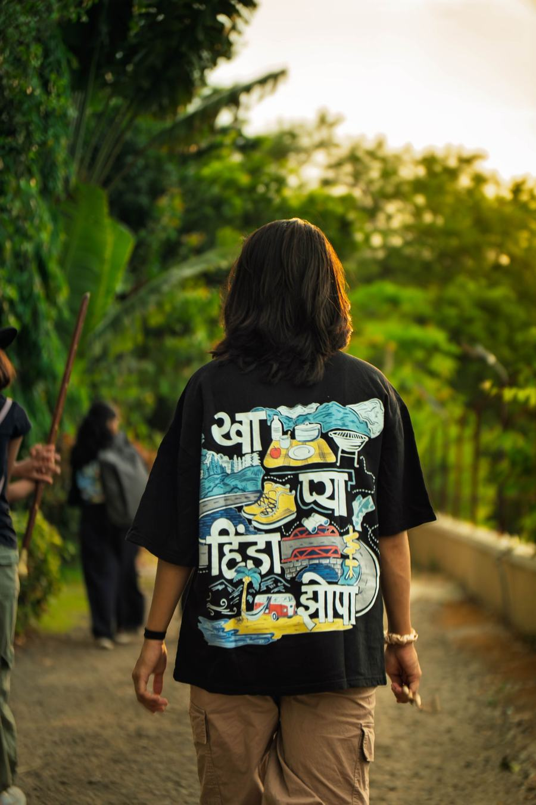

Light, held
a little longer.
Product, portrait and event work for brands that care how they are seen.
Scroll ↓
Selected work
Seven of forty-one



Series
2019 — 2026
01
Dark Field
2026 · Product
02
New Beginnings
2025 · Portrait
03
Pit Lane
2025 · Motorsport
04
After Hours
2024 · Live
05
Small Objects
2024 · Still lifeI don't photograph things. I photograph the way they feel.
— Aperture Studio